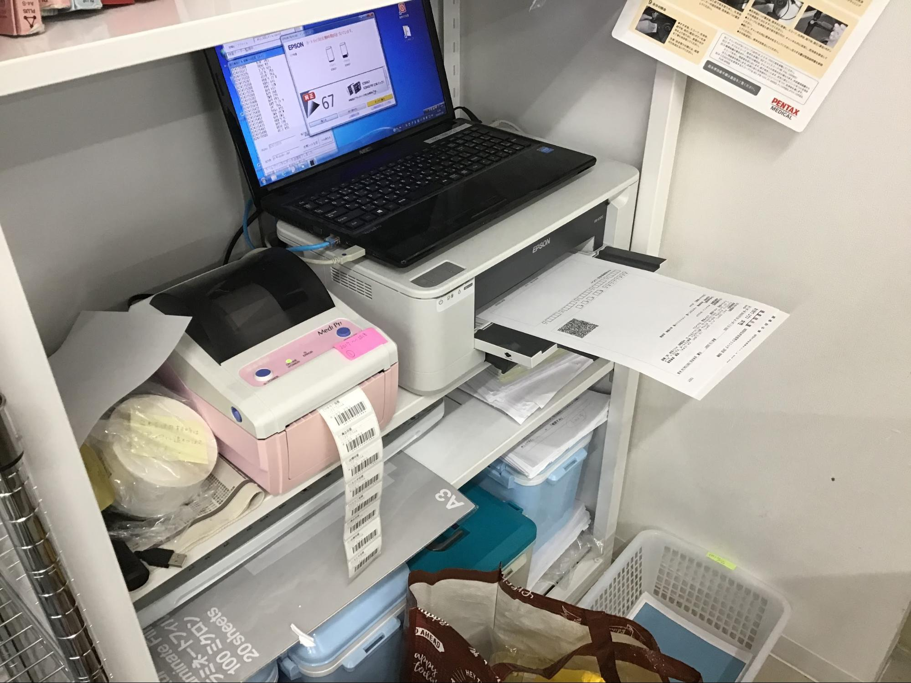
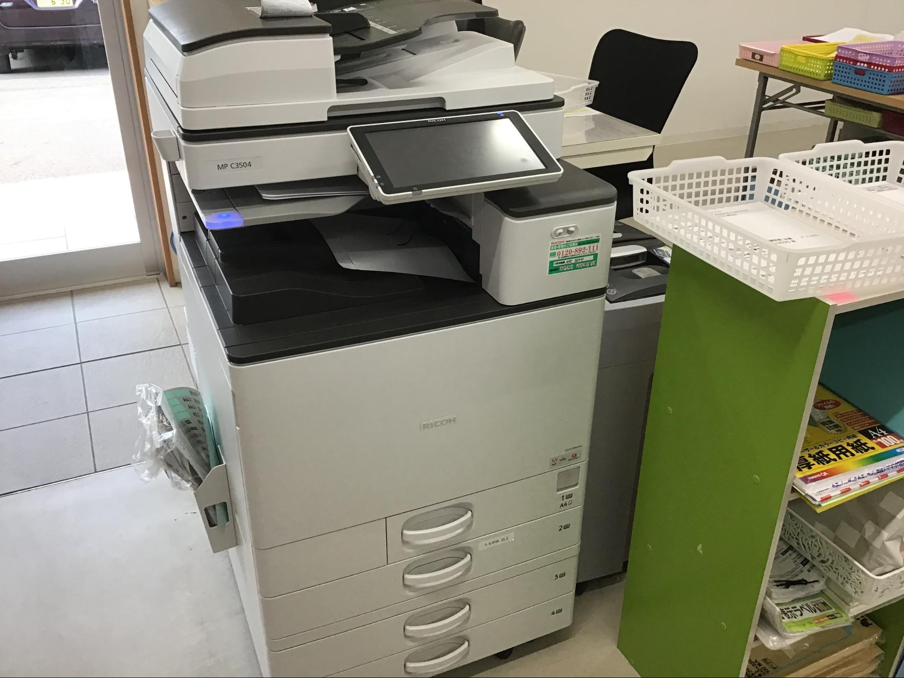

ログイン（調整中）
カルテ操作
カルテ入力
サマリー
書類BOX
メモ
カレンダー
地図の詳細
在宅予定
予定一覧
ルート確認
写真の取込
他カルテ
メモの種類
重要メモ
患者検索
診察同行
１日の流れ
訪問後処理
予定の印刷
始業前
予習
処方箋
初診
CV
PICC
ナート
アルツ
気切交換
胃瘻交換
胃瘻新規患者
医師可能手技
訪問看護
１日の流れ
始業前
注意点
褥瘡処置
時間区分
リーダー
検査
ダウンロード
ラベル出し
提出方法
手書き用紙
他職連携
ST依頼
放射線出勤日
検査科依頼
外部
HOT導入
輸血の発注
救搬
医療機材
吸引機洗浄
吸引機組立
レガシー
カフティ
シリンジJ
鑷子など
ゴミ分別
内視鏡
その他
カルテ入力
サマリー
書類BOX
メモ
カレンダー
地図の詳細
在宅予定
予定一覧
ルート確認
写真の取込
他カルテ
メモの種類
重要メモ
患者検索
【採血・検体の提出】
 
ラベル・用紙を出す→
検体ラベル・用紙の出し方
手書き用紙の場合は→
手書きの検体用紙